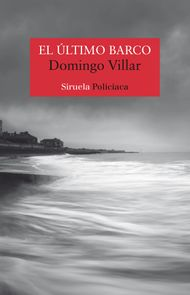

El ultimo barco
Autor: Domingo Villar
Editorial: Siruela

Editorial: Siruela
Sinopsis: La hija del doctor Andrade vive en una casa pintada de azul, en un lugar donde las playas de olas mansas contrastan con el bullicio de la otra orilla. Alli las mariscadoras rastrillan la arena, los marineros lanzan sus aparejos al agua y quienes van a trabajar a la ciudad esperan en el muelle la llegada del barco que cruza cada media hora la ria de Vigo. Una mañana de otoño, mientras la costa gallega se recupera de los estragos de un temporal, el inspector Caldas recibe la visita de un hombre alarmado por la ausencia de su hija, que no se presento a una comida familiar el fin de semana ni acudio el lunes a impartir su clase de ceramica en la Escuela de Artes y Oficios. Y aunque nada parezca haber alterado la casa ni la vida de Monica Andrade, Leo Caldas pronto comprobara que, en la vida como en el mar, la mas apacible de las superficies puede ocultar un fondo oscuro de devastadoras corrientes. Domingo Villar aparece vinculado a uno de los fenomenos editoriales mas destacados de estos ultimos años... Pero ¿cual es su secreto? Sin duda la creacion de un mundo propio dentro de la novela negra; un mundo con su tiempo y espacio determinados, laberintos y misterios, que provoca en el lector que lo descubre el placer por habitarlo. Es como degustar el aroma de un vino nuevo fermentado en la bodega de la mejor literatura de intriga. El Pais
Los precios publicados en esta tienda están sujetos a cambios sin previo aviso y solo son aplicables para ventas en línea.
Algunos títulos están sujetos a disponibilidad.
Todos los Derechos Reservados